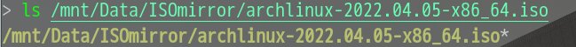
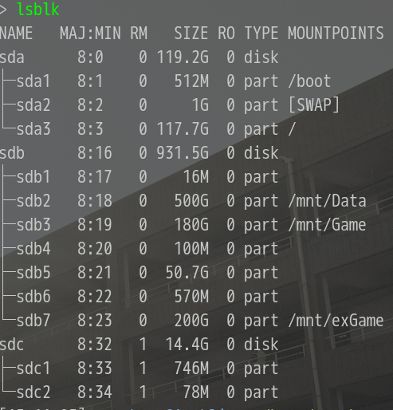
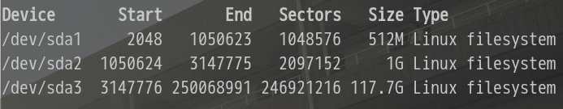

制作安装盘会将 U 盘中的数据全都删除，请注意数据备份！(数据无价，谨慎操作）
将archlinux ISO 文件下载到系统中，这里提供个国内网易镜像站的下载地址

将U盘插入电脑
查看U盘所对应的设备号
lsblk

可以看到图中我的U盘为 /dev/sdc 记住自己的设备号
dd 命令将 ISO 文件写入到U盘中dd if=/path/to/iso of=/path/to/dev bs=2M
其中 if= 后接 ISO 文件的路径，of= 后接设备的路径，bs= 接拷贝速率（默认为512k）。 以图中 ISO 文件路径和 U 盘路径为例，则 dd 命令为
dd if=/mnt/Data/ISOmirror/archlinux-2022.04.05-x86_64.iso of=/dev/sdc bs=2M
到此，U盘安装盘制作完成
Windows 用户可以使用 rufus, 软碟通(ultraISO) 等来制作 U 盘安装盘
将U盘插入电脑
打开安装盘制作软件，选择 ISO 文件和 U 盘，然后开始安装
请搜索自己使用的电脑品牌进入 BIOS 的按键，然后在开机的使用间断按下按键，然后进入到 BIOS 界面
设置完启动项后 F10 保存并退出 BIOS 界面。
进入到 U 盘启动项后，可以看到 archlinux live system 的启动选项，选择默认第一项启动进入到 live 系统
官方安装指南中指出了安装archlinux最简系统所需要的步骤，但其中缺少了一些步骤，使得在安装过程中或安装完成后的使用存在些问题。
~~ 如果你使用网线连接电脑的话，则跳过第一步 ~~
iwctl
# 然后进入到 iwctl 命令中, 接下来的命令是在 iwctl 中使用的
# 查看可使用的设备
station list
# 扫描网络环境, 以下 wlan0 替换成 `station list` 列出的设备名称
station wlan0 scan
# 获得 WiFi 信息
station wlan0 get-network
#连接 WiFi
station wlan0 connect wifiname
#连接隐藏 WiFi
station wlan0 connect-hidden wifiname
#查看设备连接情况
station wlan0 status
测试网络是否连接, Ctrl+c 退出测试
ping bing.com
timedatectl set-ntp true
# 查看硬盘信息
fdisk -l
# 硬盘分区, sda 替换成要分区的硬盘设备
# 如果只有一块硬盘则一般为sda，如果有两块硬盘，则看你是要使用哪块（两块一般分别为sda，sdb）
fdisk /dev/sda
# 接下来命令为在fdisk中使用
# 显示帮助信息
m
# 格式化为一块 gpt 类型的分区
g
# 新建分区
n
1. 输入设备号[可保持默认，直接回车]
2. 输入分区开始地址[可保持默认，直接回车]
3. 输入分区大小[例如 `+500M` , 默认为硬盘剩余大小]
# UEFI 引导模式下 archlinux 需要创建 3 块分区，去对应挂载点分别为 /boot, swap, /
# 3 块分区大小官方建议为
# /boot 分区至少300M
# swap 分区大于512M
# / 分区（即 根分区)可直接为剩余大小
# 写入分区设置信息并退出fdisk
w

可仿照我的分区情况进行分区，如果你的内存比较小的话可以把 swap 分区给大点
以为步骤按此图中的分区信息进行设置
根据上图分区情况对分区进行文件系统更改
# /boot 分区
mkfs.fat -F 32 /dev/sda1
# swap 分区
mkswap /dev/sda2
# / 分区
mkfs.ext4 /dev/sda3
# 挂载 / 分区
mount /dev/sda3 /mnt
# 挂载 /boot 分区
mkdir /mnt/boot
mount /dev/sda1 /mnt/boot
# [注] 官方安装指南中此处为一条命令 `mount --mkdir /dev/sda1 /mnt/boot` ，但实际使用中好像 mount 命令已经不支持 --mkdir 选项了
# 开启 swap 分区
swapon /dev/sda2
reflector --country China --age 24 --protocol https --sort rate --save /etc/pacman.d/mirrorlist
pacstrap /mnt base base-devel linux linux-firmware dhcpcd neovim networkmanager
# base, linux, linux-firmware: 基础包
# base-devel: 使用 AUR 构建包时会使用到
# dhcpcd: 动态 ip 地址分配
# NetworkManager: 网络管理器，联网时使用
# neovim: 文本编辑器，亦可使用 vim，nano等
genfstab -U /mnt >> /mnt/etc/fstab
到此，系统安装完成，接下来到新系统中完成初始配置
# 切换到新系统中
arch-chroot /mnt
# 安装 fish, 有命令补全自动大小写，pacman补全包名等功能
pacman -S fish
# 设置默认 shell 为 fish，设置在下次登录时才起作用，
# 如果想现在就使用，亦可直接使用命令 fish 临时进入到 fish 中
chsh -s /bin/fish
# 设置 root 用户密码
passwd
# 然后分两次输入想设置的 root 密码
# 设置时区
ln -sf /usr/share/zoneinfo/Asia/Shanghai /etc/localtime
hwclock --systohc
# 设置系统支持语言
# 编辑 /etc/locale.gen 文件, 将 en_US.UTF-8 UTF-8, zh_CN.UTF-8 UTF-8, zh_CN.GBK GBK 前面的注释符`#`删掉
# 运行下面命令
locale-gen
# 设置系统语言
# 创建并编辑 /etc/locale.conf 文件，在文件中写入如下语句
LANG=en_US.UTF-8
# 设置电脑名
# 创建编辑 /etc/hostname 文件，写入想设置的电脑名
mycomputername
# 创建普通用户
useradd -m -g users -G wheel -s /bin/fish username
# 把 username 改成创建的用户名
# 给创建的普通用户设置密码
passwd username
# 同设置 root 用户密码一样需要输入两次
# dhcpcd，NetworkManager服务系统开机自启动
systemctl enable dhcpcd NetworkManager
grub 引导配置（还是在新系统中）
# 查看 cpu 架构
uname -a
# 安装 grub 等包以实现引导配置
pacman -S grub efibootmgr intel-ucode os-prober ntfs-3g
# [注]
# intel-ucode: intel cpu 安装此包，amd cpu 安装 amd-ucode 包
# os-prober: 多系统安装时使用此包，grub 会查找其他系统的引导并加入到 arch 启动项中
# ntfs-3g: 如果你有其他分区是 ntfs 或安装有 windows 的话安装这个包使linux系统能够读取其中的内容
# 安装引导
grub-install --target=x86_64-efi --efi-directory=/boot --bootloader-id=Archlinux
# 生成 grub 配置文件
grub-mkconfig -o /boot/grub/grub.cfg
pacman -S xorg lightdm i3
# [注]
# xorg: 图形界面服务
# lightdm: 显示管理亦登录管理器
# i3: i3 窗口管理器，如果你喜欢集成桌面环境的话，不用安装 lightdm 和 i3
# 直接安装 kde, gnome, xfce等更主流桌面环境，包名分别为
# kde --> plasma
# gnome --> gnome
# xfce --> xfce4
# dde(deepin desktop environment) --> deepin
# 配置 lightdm, 找到 seat 下 user session 取消注释并设置为 i3
------ /etc/lightdm/lightdm.conf --------
[Seat:*]
user-session=i3
# 设置 lightdm 服务自启动
systemctl enable lightdm
# 终端以及字体
pacman -S alacritty wqy-mirohei-lite wqy-zenhei ttf-dejavu
# 英伟达驱动
pacman -S nvidia-prime nvidia-settings nvidia-utils
# 需用使用英伟达驱动的软件使用 prime-run 命令启动，如 steam 可使用如下命令启动
prime-run steam &>/dev/null & disown
一直运行 exit 到 live 环境中
# 取消挂载
unmount -R /mnt
# 重启
reboot